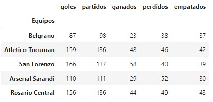
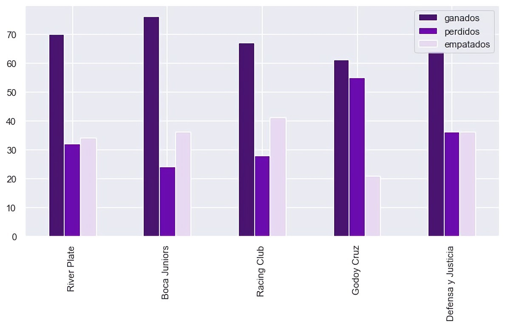

Alumnos: Demarco Agustín, Montero Pablo
Profesor: Xavier González
Esta página muestra estadísticas relevantes de la liga de futbol argentina y de sus principales figuras, con la finalidad de difundir el análisis de los datos para futuros proyectos. Dicho análisis fue hecho en Python, tomando como información la base de datos de cada año de los partidos de la primera división del futbol Argentino, desde 2016 hasta 2021. Todo el material que utilizamos, desde la información hasta los programas, están abierto al público en el siguiente repositorio de Github:
Repositorio de Futbol ArgentinoA su vez, podrán ver en esta página una explicación de nuestro razonamiento, como guía de soporte al código en Python. Esto podría servir a alguien que por primera vez trabaja con archivos de este estilo, como fue nuestro caso.
Lo que hicimos en esta etapa fue importar los datasets para cada año en Python. Cada dataset lo almacenamos en la llave de un diccionario, para luego adjuntarlo en un solo dataframe.
Para todo el trabajo, utilizamos las siguientes librerías, que importamos desde Python:
import pandas as pd
import json
from yaml import load
import seaborn as sns
import matplotlib.pyplot as plt
import numpy as np
Los links de descarga de cada dataset podrán encontrarlos en el respositorio de Github. Estos son archivos en formato json, que tuvimos que trabajar para transformar el formato y encontrar la información relevante. En primer lugar, para cada dataset (los renombramos como "dataaño") los importamos a Python de la siguiente manera:
with open('data2016.json') as json_file:
data = json.load(json_file)
archivo = pd.DataFrame(data)
info['2016']= archivo
del archivo
data.clear()
Donde "info" es un diccionario en el que cada llave es el año del torneo:
# Genero un diccionario en el que cada llave contiene la base de datos del año respectivo
info = {'2016': None,'2017': None,'2018': None,'2019': None,'2020': None,'2021': None}
El último paso fue concatenar todos los elementos del diccionario, en el mismo dataframe:
# Creo un solo dataset de todos los años
archivo = pd.concat([info["2016"], info["2017"],info["2018"],info["2019"],info["2020"],info["2021"]], axis=1, join='inner')
Quisimos calular, para cada equipo, la cantidad de goles, partidos jugardos y partidos ganados, empatados y perdidos. Para esto, procedimos similar al modo anterior: creamos un nuevo diccionario en el que cada llave es un equipo y los elementos de cada llave son estas variables. Primero, creamos el diccionario con cada equipo, comparando y almacenándolos en caso de que no lo contenga:
#Creo un diccionario donde cada llave son los equipos
gol = {}
for ele in archivo:
local = archivo[ele]['matchCentreData']['home']['name']
if local not in gol.keys():
gol[local]= {'goles':0,'partidos':0,'ganados':0,'perdidos':0,'empatados':0}
visitante = archivo[ele]['matchCentreData']['away']['name']
if visitante not in gol.keys():
gol[visitante]= {'goles':0,'partidos':0,'ganados':0,'perdidos':0,'empatados':0}
Una vez creado el diccionario, resta calcular el resultado de estos parámetros. Para hacer esto, comparamos el resultado del partido. De este modo sabemos cuántos goles hizo cada equipo, cuántos partidos jugó cada uno y cómo fue el resultado (ganó, empató o perdió).
#Sumo los goles en cada equipo
for ele in archivo:
df2 = archivo[ele]['matchCentreData']
local = df2['home']['name']
gollocal = df2['score'][0]
visitante = df2['away']['name']
golvisita = df2['score'][4]
# Sumo los goles en el diccionario
gol[local]['goles'] = gol[local]['goles'] + int(gollocal)
gol[visitante]['goles']=gol[visitante]['goles'] + int(golvisita)
#Sumo los partidos en el diccionario
gol[local]['partidos'] = gol[local]['partidos'] + 1
gol[visitante]['partidos']=gol[visitante]['partidos'] + 1
# Sumo las victorias, empates y perdidas
if gollocal > golvisita:
gol[local]['ganados'] = gol[local]['ganados'] + 1
gol[visitante]['perdidos']=gol[visitante]['perdidos'] + 1
elif gollocal < golvisita:
gol[local]['perdidos'] = gol[local]['perdidos'] + 1
gol[visitante]['ganados']=gol[visitante]['ganados'] + 1
else:
gol[local]['empatados'] = gol[local]['empatados'] + 1
gol[visitante]['empatados']=gol[visitante]['empatados'] + 1
El resultado de los cálculos:
En primer lugar, quisimos saber cuáles son los equimos más goleadores de los últimos años. Este parámetro ya fue calculado, por lo que solamente hay que reordenarlos y crear el gráfico:
goleadores = tabla.sort_values(by='goles',ascending = False).iloc[:,[0]].head()
goleadores.plot.bar(rot=0,title = 'Equipos más goleadores')
goleadores['Equipos'] = goleadores.index
ax = sns.barplot(x = 'Equipos',
y = 'goles',
data = goleadores,
palette = 'Blues')
show_values(ax)
plt.show()
Los resultados son los siguientes:

Además, para estos equipos, quisimos comparar su performance en los partidos. Para esto, creamos un nuevo gráfico de barras:
plt.figure(figsize=(3,1))
ax =perf.plot(x="Equipos", y=["ganados", "perdidos",'empatados'], kind="bar")
show_values(ax)
plt.show()
Los resultados son los siguientes:
Decidimos llevar el análisis un paso más allá, y obtener estadísticas de los jugadores más relevantes de los últimos años.
Para esto, procedimos de manera similar al código mostrado anteriormente: generamos un DataFrame con los jugadores como protagonistas, y para cada uno de ellos calculamos la cantidad de goles, asistencias, expulsiones, entre otros. Luego, ponderamos estos factores para determinar quiénes son los más relevantes en función cada categoría, y de la posición del jugador. Si bien hicimos el análisis para todos los años, mostraremos los resultados que obtuvimos para el 2021 con el fin de facilitar la lectura y priorizar el desarrollo del código.
Comenzamos armando las tablas de con la información más relevante. En estas tablas, cada fila representa un jugador distinto y las columnas son estadísticas para cada año.
Obtenemos de la siguiente manera, la lista de jugadores:
name={}
def players_name(year):
result = {}
for game in games_played:
for where in ('home','away'):
players = archivo[game]['matchCentreData'][where]['players']
for player in players:
player_id = player['playerId']
if player_id not in result:
result[player_id] = player['name']
return result
for year in years:
name["name"] = players_name(year)
Para cada jugador, determinamos algunos datos personales como la posición, el club, peso, edad actual y altura. La lógica fue la siguiente:
team={}
def players_team(year):
result = {}
games = globals()[f"games_{year}"]
tournament = globals()[f"torneo_{year}"]
for game in games:
for where in ('home','away'):
players = tournament[game]['matchCentreData'][where]['players']
team_oponents = tournament[game]['matchCentreData'][where]['name']
for player in players:
player_id = player['playerId']
if player_id not in result:
result[player_id] = team_oponents
return result
for year in years:
team[f"team_{year}"] = players_team(year)
Luego, indexamos a cada jugador las estadísticas que usaríamos más adelante para armar los rankings. Algunas de estas son: goles, asistencias, tarjetas, jugador del partido, pases, barridas, faltas. La lógica es similar a la anterior:
events_goal = {}
def goal_players(year):
result = {}
games = globals()[f"games_{year}"]
tournament = globals()[f"torneo_{year}"]
for game in games:
for where in ('home','away'):
events=tournament[game]['matchCentreData'][where]['incidentEvents']
for event in events:
try:
player_id = event['playerId']
goal = event['isGoal']
if player_id not in result:
result[player_id] = 0
if goal is True:
result[player_id] += 1
except KeyError:
1
return result
for year in years:
events_goal[f"goal_{year}"] = goal_players(year)
Una vez que conseguimos las estadísticas más importantes para cada jugador, solo restó ponderar cada una, en función de la posición, para poder comparar entre ellos y determinar a los jugadores más relevantes. El criterio que elejimos fue el siguiente:
def most_valuable_GK(year):
Players_Structured_Info[f"MostValuableGK_{year}"] = 5*Players_Structured_Info[f"mvp_{year}"] + Players_Structured_Info[f"saves_{year}"] + Players_Structured_Info[f"passesSuccess_{year}"] - Players_Structured_Info[f"foulsCommited_{year}"] - 2*Players_Structured_Info[f"yellow_card_{year}"] - 4*Players_Structured_Info[f"red_card_{year}"]
return Players_Structured_Info
for year in years:
most_valuable_GK(year)
def most_valuable_defender(year):
Players_Structured_Info[f"MostValuableDEF_{year}"] = 5*Players_Structured_Info[f"mvp_{year}"] + Players_Structured_Info[f"passesSuccess_{year}"] + 2*Players_Structured_Info[f"successTackles_{year}"] + 2*Players_Structured_Info[f"interceptions_{year}"] - Players_Structured_Info[f"foulsCommited_{year}"] + 4*Players_Structured_Info[f"goal_{year}"] + Players_Structured_Info[f"assist_{year}"] - 2*Players_Structured_Info[f"yellow_card_{year}"] - 4*Players_Structured_Info[f"red_card_{year}"]
return Players_Structured_Info
for year in years:
most_valuable_defender(year)
def most_valuable_MidFielder(year):
Players_Structured_Info[f"MostValuableMID_{year}"] = 5*Players_Structured_Info[f"mvp_{year}"] + 2*Players_Structured_Info[f"passesSuccess_{year}"] + Players_Structured_Info[f"successTackles_{year}"] + 3*Players_Structured_Info[f"successDribles_{year}"] + 2*Players_Structured_Info[f"interceptions_{year}"] - Players_Structured_Info[f"foulsCommited_{year}"] + 4*Players_Structured_Info[f"goal_{year}"] + 4*Players_Structured_Info[f"assist_{year}"] - 2*Players_Structured_Info[f"yellow_card_{year}"] - 4*Players_Structured_Info[f"red_card_{year}"]
return Players_Structured_Info
for year in years:
most_valuable_MidFielder(year)
def most_valuable_Forward(year):
Players_Structured_Info[f"MostValuableFOR_{year}"] = 5*Players_Structured_Info[f"mvp_{year}"] + Players_Structured_Info[f"passesSuccess_{year}"] + 3*Players_Structured_Info[f"successDribles_{year}"] + Players_Structured_Info[f"interceptions_{year}"] - Players_Structured_Info[f"foulsCommited_{year}"] + 4*Players_Structured_Info[f"goal_{year}"] + 3*Players_Structured_Info[f"assist_{year}"] - 2*Players_Structured_Info[f"yellow_card_{year}"] - 4*Players_Structured_Info[f"red_card_{year}"]
return Players_Structured_Info
for year in years:
most_valuable_Forward(year)